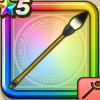

書聖のつえ
攻略班 6.5点 / バーハマヒャドメラゾーマ※錬成で強化可能
くわしい特徴
【レベル別習得スキル】 Lv1こうげき魔力+5 Lv10バーハ（消費MP：10）仲間ひとりのブレスダメージを1段階軽減する。効果は2段階まで上げられ、使用時含む5ターンの間継続する。軽減率は1段階目で20%、2段階目で40%。 Lv15メラ属性じゅもんダメージ+10% Lv20マヒャド（消費MP：24）敵全体にヒャド属性呪文中ダメージを与える。 Lv30メラゾーマ（消費MP：22）敵1体にメラ属性の呪文特大ダメージを与える Lv35物質系へのダメージ+5% Lv40ドラゴン系へのダメージ+5% Lv45エレメント系へのダメージ+5% Lv50こうげき魔力+12錬成スキル改1ターン開始時MPを5回復する改2メラゾーマ改（消費MP：30）敵1体にメラ属性の呪文特大ダメージを与える改3エレメント系へのダメージ+10%改4錬成ぶき特別演出解放・メガモン討伐結果発表時に特別演出が追加・武器の見た目に特別なエフェクトが追加 【限界突破スキル】 1凸じゅもんダメージ+5% 2凸じゅもんダメージ+5% 3凸じゅもんダメージ+5% 4凸じゅもんダメージ+5%